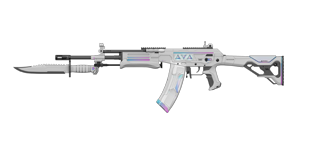

← 가이드 모음
TRACKING SA · WEAPON ARCHIVE
마이건2,
차이를 한눈에.
이름은 많아져도, 차이는 쉽게.
총기 이미지부터 기능이 발동하는 순간까지 찾아보세요.
12 시리즈151 총기 이미지로그인 없이 이용
도감 살펴보기 ↘

피해량 스택을 채우면, 빠른 재장전.
공식 가이드의 대표 외형 예시
FIND YOUR SERIES
어떤 차이가 궁금한가요?
시리즈는 기능으로, 총기는 이름으로 찾아보세요.
도감 정보를 준비하고 있어요.
조건에 맞는 시리즈가 없어요.
다른 총기 이름을 검색하거나 필터를 초기화해 보세요.